|
会面六重奏系列(Meetings Sextet)
| 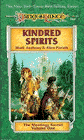 |
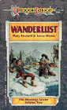 |
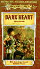 |
| 家族精神(Kindred Spirits) |
流浪癖(Wanderlust) |
黑暗之心(Dark Heart) |
| 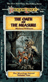 |
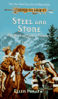 |
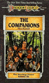 |
| 誓言和标准(The Oath and the Measure) |
钢和石(Steel and Stone) |
同伴(The Companions) |
家族精神马克·安索尼(Mark Anthony)、艾伦·波拉斯(Ellen Porath)
在长枪之战前，奎灵那斯提森林不对任何外人开放。但佛林特·火炉作为一个声名远扬的工匠，收到了太阳咏者的邀请去打造一些工艺品。在那里，他第一次遇见了半精灵坦尼斯。那时坦尼斯30多岁，大概相当于人类14岁左右。罗拉娜相当于10岁左右。佛林特出色的手艺使他得到了太阳咏者的友谊，得以不时造访奎灵那斯提。当坦尼斯20岁时，罗拉娜宣布了对他的爱情。各种流言诽谤铺天盖地而来，连同坦尼斯对自己血统的忧虑，使得半精灵处于一种极度不利的环境下。佛林特和坦尼斯一起洗清了加在坦尼斯身上的不实之词，这也是他俩终身友谊的开端。
流浪癖玛丽·柯屈佛(Marry Kirchoff)、斯蒂夫·温特(Steve Winter)
泰索何夫·柏伏特，流浪成瘾的坎德人逛到了索拉斯，遇见了半精灵坦尼斯和佛林特·火炉。本来他们三人不会发生任何联系，但当泰斯“偶然发现”佛林特的一个手镯跑到了他自己的袋袋里之后，三人就这样结识了。他们一同前往进行了一次漫长的旅行，拯救了整个达根纳斯提(Dargonesti)精灵族，而且，三人成为了好朋友。
黑暗之心蒂娜·丹尼尔(Tina Daniell)
奇蒂拉一生都处在和人的争斗中。当她8岁时，她奋力救下了出生时就羸弱不堪的雷斯林，这是她人生的第一仗。往后，她从索拉斯出发进行她自己的旅程。在旅程中，她所面临的是一个没有法律的世界。喜爱奇蒂拉的朋友可以很清楚地看出她为什么会变得冷酷无情。另一方面，大家又可以看到她和卡拉蒙、雷斯林并肩作战的场面——她充满人性的一面。
誓言和标准迈克尔·威廉姆斯(Michael Williams)
故事中，青年史东和玛哲理兄弟住在一起。对骑士守则感到迷惑的史东不听卡拉蒙和雷斯林的劝告执意前去参加一年一度的索兰尼亚骑士聚会，但这次聚会却被一个神秘的生物打断了。在接受了这次考验之后，史东出发去寻找失踪的父亲，并探寻到底什么才是荣誉的真正含义。
钢和石艾伦·波拉斯(Ellen Porath)
坦尼斯和奇蒂拉初次相识于坦尼斯将奇蒂拉从一群地精中解救了出来。但坦尼斯却受到了奇蒂拉的攻击，因为这只是她在找乐子而已。后来，两人一起做了一次旅行。本书网上的评价并不高。
同伴蒂娜·丹尼尔(Tina Daniell)
本书记述了坦尼斯、佛林特、泰斯、史东、雷斯林、卡拉蒙、奇蒂拉的第一次共同冒险。坦尼斯、佛林特和雷斯林不得不去危险的米诺陶斯的国度，去解救被抓的同伴……
矮人国度三部曲(Dwarven Nations)
丹·帕金森(Dan Parkinson)
| 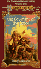 |
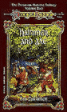 |
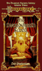 |
| 铸造之盟约(Covenant of the Forge) |
锤与斧(Hammer and Axe) |
剑源卷轴(The Swordsheath Scroll) |
铸造之盟约
矮人作为克莱恩世界的主要种族，当然不会被TSR遗忘，矮人国度三部曲就是讲述矮人历史、文化、政治、社会组织的。本书讲述的是龙枪中著名的矮人国度索巴丁是如何建立起来的。科林·石牙(Colin Stonetooth)是一支希拉矮人(Hylar)的首领，他们不得不离开家园，横穿安塞隆大陆，来到卡若理山脉寻求新的家园。在这里他们遇见了其它部落的矮人。在经历了一场战争后，所有的矮人终于团结起来，一起建立了矮人伟大的国度索巴丁。
锤与斧
本书接着上一本讲述索巴丁的故事。新一代的索巴丁矮人如今面临的是完全不同的外部世界：亚苟斯帝国正渐渐蚕食着矮人们的国土。祸不单行的是，邪恶的法师也在和索巴丁作对。好不容易安顿下来的矮人又得放下工作的铁锤，拿起战斗的斧子了。
剑源卷轴
紧接着上一本，矮人们在法师之战结束后，面对的外部情况并没有好转。亚苟斯帝国如今不但对于矮人，而且对于精灵也成为了一个威胁。德金(derkin)，一名生于索巴丁的矮人，如今将作为被选定的人(the Chosen Ones)，领导矮人和精灵的联军共同和人类作战。顺便说一下书名swordsheath中heath是一种植物石南，但此处作者恐怕用的还是它的另一个意思：幼时出生的地方，意为矮人们通过剑，也就是武力，来捍卫自己的家乡。通过这三本书，矮人们的形象也就基本展现在我们眼前了。一般来说，矮人不同于精灵，他们是坚韧顽强的实干派，当出现什么情况时，他们才不会象精灵那样总想着退避，而是操起斧头上战场……
坏人系列(Villains)
| 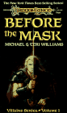 |
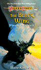 |
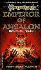 |
| 面具之前(Before the Mask) |
黑翼(The Black Wing) |
安塞隆皇帝(Emperor of Ansalon) |
| 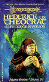 |
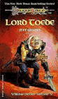 |
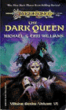 |
| 大神官韩德瑞克(Ellen Dodge Severson) |
大地精投德(Lord Toede) |
黑暗之后(The Dark Queen) |
面具之前迈克尔·威廉姆斯(Michael Williams)、特丽·威廉姆斯(Teri Williams)
春晓之巨龙里的大反派猛敏那大家还记得吧？他出生时就有德鲁伊预言恶兆。身处卑贱的他某天听到了神秘的召唤。渴望摆脱卑下地位，同时也渴望获取权力，于是他屈从了黑暗之后的召唤，走上了邪恶之路。戴上了令人生畏的面具，在黑暗之后的阵营里一步步往上爬，也越来越残酷无情，最后终于成为了龙骑将。
黑翼玛丽·柯屈佛(Mary Kirchoff)
讲述的是沙克·沙罗斯的那条黑龙姬赛斯的故事。和其它的龙一样，当她还是只幼龙时就已经进入睡眠。而当她醒来时，已是大灾变之后，世界已经和大灾变前完全不同。没有了善良巨龙抗衡的她，发现自己已经成为了所有生物敬畏的对象。和春晓之巨龙中的相关章节不同，本书中是以姬赛斯的角度来记述她在黑龙军团中的经历。
安塞隆皇帝道格拉斯·奈尔(Douglas Niles)
讲述艾瑞阿卡斯的故事。在他还是个年轻人的时候，他和一名矮人一起展开了一次旅途，凭着手中的剑和坚韧的毅力，终于通过了黑暗之后的考验，成为了黑暗势力的一员。
大神官韩德瑞克艾伦·多吉·塞文森(Ellen Dodge Severson)
韩德瑞克出生于一个小村庄中，起先他信奉伪神。后来一个追寻者组织的人令他改变了信仰，而他的姐姐就是这个神的牧师，于是他面临着他的第一次抉择……以后他因为毫不留情地清除一切和魔法与古老的诸神有关的人和东西而成为了索拉斯的大神官。在这里，一个由法师、窃贼、半人马、坎德人组成的奇怪的小团体将向他挑战，阻止他毁掉这些宝贵的东西。
大地精投德杰夫·格拉布(Jeff Grubb)
两个无尽深渊的魔鬼打了一个赌：愚蠢残酷又欺软怕硬的大地精投德如果再有一次机会，会不会变得高贵而又善良。于是投德被送回了克莱恩世界，惜乎他的表现仍然不佳。于是不愿认输魔鬼又给了他第三次、第四次机会……爆笑场面层出不穷的本书受到了龙枪爱好者的一致好评。
黑暗之后迈克尔·威廉姆斯(Michael Williams)、特丽·威廉姆斯(Teri Williams)
名字虽然叫做黑暗之后，但书中涉及黑暗之后的地方甚少。大部分都在讲一个沙漠部落是如何反抗伊斯塔，而可能会影响黑暗之后计划的此举又是如何引起黑暗之后的注意，然后一个哑巴奴隶、一个吟游诗人和一个德鲁伊以及一些精灵又是如何对抗黑暗之后的。老实说网上对此书的评价甚低:)
巨龙文集三部曲(Dragons Anthologies)
玛格丽特·魏丝(Margaret Weis)、崔西·希克曼(Tracy Hickman)
| 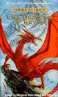 |
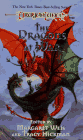 |
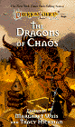 |
| 克莱恩之巨龙(Dragons of Krynn) |
战争之巨龙(Dragons at War) |
混乱之巨龙(Dragons of Chaos) |
克莱恩之巨龙
一些关于龙的短篇小说合集。基本上上面提到的各位作者都有作品收录在内。除了龙的故事，还有几篇关于龙人的故事。
战争之巨龙
另一本短篇小说合集。很多其它系列小说中关于龙的描写中不清楚的地方都有对应的小说进行了补完，比如龙蛋的孵化等等。
混乱之巨龙
本书收录的短篇同样都是和龙有关的，不过故事全是发生在混乱之战前后。
魔法守护者三部曲(Defenders of Magic)
玛丽·柯屈佛(Mary Kirchoff)
| 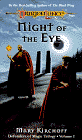 |
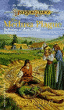 |
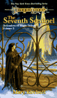 |
| 黑夜之眼(Night of the Eye) |
美杜莎灾难(The Medusa Plague) |
第七哨兵(The Seventh Sentinel) |
黑夜之眼
当克莱恩三个月亮中的一个达到满月的时候，这个月亮所代表的魔法便达到了最大的力量，这就是黑夜之眼，也是魔法师们等待的时刻。格兰德·迪松(Guerrand DiThon)，一位年轻的贵族，就在这样的一个夜晚从家族安排的婚礼上逃走了，踏上了去往接受试炼的大法师之塔的路程。然而，他的旅途不会轻松。除了来自家族的阻力，还有其它的敌人在前方等着他……
美杜莎灾难
布兰·迪松(Bran DiThon)，格兰德的侄子，是迪松家族领地的唯一继承人。然而现在他的领地里，一场神秘的灾难正悄悄席卷而来，所过之处，人们全都变成了石头。布兰于是前去消逝之魔塔(the Lost Citadel)的守护城堡找十年前失踪的叔叔。但他不知道的是，格兰德的宿敌正窥视在旁，寻找机会把他们全部一网打尽。
第七哨兵
本书是三部曲中的最后一部。前两部中留下的种种谜团都到了真相大白的时候。在第三次巨龙战争时(2690-2645PC)，魔法师们为了封印失控的魔法，向魔法之神祈求，封印了魔法所发动的地方，也就是消逝之魔塔。但魔法师公会也为此付出了沉重的代价。当时的一个魔法师林(Lyim)，也曾经是格兰德·迪松的好朋友，感到自己被魔法师公会背叛了，于是他开始暗地里谋划着对魔法师公会的报复，迪松家族所遭受的苦难也是这报复的一部分。但他仍然不满足，更进而计划将魔法从克莱恩世界完全消灭掉。所以布兰·迪松，一定得在他找到通往消逝之魔塔的时空之门前阻止他……
失落的历史系列(Lost Histories)
| 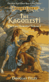 |
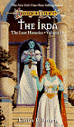 |
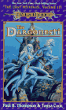 |
| 卡贡那斯提(The Kagonesti) |
爱达(The Irda) |
达根那斯提(The Dargonesti) |
| 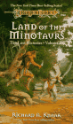 |
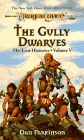 |
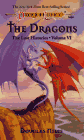 |
| 米诺陶斯之地(Land of the Minotaurs) |
古力矮人(the Gully Dwarves) |
龙(The Dragons) |
卡贡那斯提道格拉斯·奈尔(Douglas Niles)
卡贡那斯提精灵，也就是人们所说的野精灵，是从第一次巨龙战争时期就和他们的精灵亲戚分道扬镳的精灵种族。崇尚自然的他们，拒绝过西瓦那斯提精灵那种“文明”的生活，而是留在了丛林中，追随他们的领袖卡贡斯(Kagonos)。而历代野精灵首领，比如卡贡斯，和银龙的友谊也成为了传说世世代代流传了下来。然而现在他们平静的生活却面临着毁灭的危险。外面，疯狂的长枪之战已席卷了整个克莱恩世界。西瓦那斯提精灵和奎灵那斯提精灵忽然来到，却把他们当作奴隶看待，与此同时，族中的年轻人受到了外部“文明”越来越多的诱惑。崇尚自然和谐的卡贡那斯提精灵还能否继续他们平静的生活？
爱达琳达·P·贝克(Linda P. Baker)
在人类的文明之前，是精灵的文明。而在精灵建立起他们的文明之前，食人魔(Ogre)在克莱恩世界上建立起的是后人难以想象的辉煌文明。那时的食人魔，皮肤是蓝色的，外貌比精灵还要俊美。然而他们残酷的社会习俗终于难陶厄运。不但文明被完全抹煞，外表也变成了现在这种丑陋凶残的样子。在这个最终的悲惨命运来临之前，食人魔中的一支，在领袖伊格瑞恩(Igraine)的带领下皈依了帕拉丁。得到善良之神庇佑的他们逃过了同类的下场，保持了他们俊美的外形，这就是爱达一族的由来。然而，被黑暗之后创造，却又脱离黑暗投奔帕拉丁的他们，注定将悲哀地度过他们的一生……
达根那斯提保罗·B·汤姆斯潘(Paul B. Thomspon)、汤亚·C·库克(Tonya C. Cook)
年轻的奎灵那斯提公主，姬斯-卡南之女，维克莎(Vixa)乘船前往亚苟斯，解救她的精灵子民，然而路上她们一行人却被海浪抛到了一个奇怪的地方，在这里她们遇见了神秘的达根那斯提精灵，而他们的领袖柯菲涅(Coryphene)爱上了维克莎……
米诺陶斯之地理查德·A·纳克(Richard A. Knaak)
修玛的战友，米诺陶斯英雄卡兹继续着他探寻荣誉意义的旅途，回到了米萨斯，同行的还有坎德人德尔宾(Delbin)和他的妻子海拉提(Helati)。回到故乡的卡兹发现米诺陶斯的皇帝和一个黑袍人一起计划着把整个米诺陶斯种族统合到神权之下……
古力矮人丹·帕金森(Dan Parkinson)
一提起古力矮人，大家想到的不外乎就是愚蠢、自私、胆小怕事、不顾朋友等等。你能想象这样的古力矮人也能产生一个英雄吗？如果是要你去帮助一个古力矮人成为英雄你又会作何感想呢？呵呵现在绿龙佛丹·叶光面临的就是这种情况。被黑暗之后拒绝的它转向善良的阵营。而李奥克斯（奇怪！李奥克斯明明是中立阵营的嘛……）考验它的就是这样一个任务。读者随着丹的记述深入地了解古力矮人，同时也会笑得前仰后合……
龙道格拉斯·奈尔(Douglas Niles)
TSR认可的龙枪系列里关于龙的小说已经不少了，但还没有哪一本象这本这样是从龙本身的角度，跨越了如此广阔的时间（从克莱恩的诞生直到魔法和龙的离开，大概跨越了8000年）看待克莱恩世界。这会带给读者全新的感受，因为龙看待世界的方式和人完全不同。比如说为我们所津津乐道的大灾变，在龙看来根本就不算什么……
战士系列(Warriors)
| 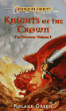 |
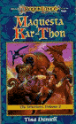 |
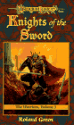 |
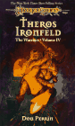 |
| 皇冠骑士(Knights of the Crown) |
马奎丝塔·卡松(Maquesta Kar-Thon) |
圣剑骑士(Knights of the Sword) |
泰洛斯·艾昂菲尔德(Theros Ironfield) |
| 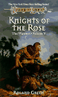 |
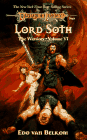 |
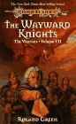 |
| 玫瑰骑士(Knights of the Rose) |
索斯爵士(Lord Soth) |
任性骑士(The Wayward Knights) |
皇冠骑士罗兰德·格林(Roland Green)
故事发生在大灾变前。伊斯塔最出色的夜贼珀万(Pirvan)偷了一些珠宝，但盗贼行会的首领却让他把这些赃物还回去。心不甘情不愿的珀万没有料到这次归还赃物的行动却改变了他的生活，使得他有机会成为一名索兰尼亚骑士。如果他能成功地完成任务，那么他就能从一名小贼成为一位受人尊敬的皇冠骑士。在旅途中，这个前窃贼一步步地学习着荣誉、忠诚这些曾经和他格格不入的东西……
马奎丝塔·卡松蒂娜·丹尼尔(Tina Daniell)
还记得编年史中这位带着一个牛头人大副的女船长吗？呵呵她和她的派里丘号(Perechon)老是让紫晶想起西赛船长和晴空号……本书讲的是当她还很年轻时，并不安于留在她父亲的照顾下，而是梦想着属于自己的冒险，于是她偷偷跑了出来，却在无意中发现米诺陶斯人的国王对她父亲下了剧毒。为了解救她的父亲，她必须和背叛族人的牛头人巴斯·昂可拉夫(Bas Ohn-Koraf)一道，夺回派里丘号，接受各种挑战，展开真正的属于自己的冒险旅程。
圣剑骑士罗兰德·格林(Roland Green)
本书承接上一本皇冠骑士，珀万如今向着圣剑骑士的封号努力着。但大灾变前的世界并不平静，人类越来越自满，尤其是伊斯塔的教会，已经开始用武力排除异己。遭到放逐的米诺陶斯人威多(Waydol)在人类的社会里逐渐了解了人类的优点与缺点，于是他在长期的放逐生活中组织起了一伙强盗盘踞在喀瑟 (Karthay)地区。自认有责任将世间一切都归于善的伊斯塔于是派遣军队前往讨伐，同时也想乘机将喀瑟地区并吞。该地区的人们当然不愿束手待毙，于是一场战争眼看就将爆发。珀万为了阻止战争的爆发，于是匆匆启程赶往喀瑟，希望能在伊斯塔的军队进攻之前，降服威多。如果牛头人不愿意的话，就赶在军队之前讨灭强盗集团。于是他就在虎视眈眈的三方的夹缝中展开了旅行。就在此时，有消息传来，他已经怀孕的妻子也正乘船赶来……
泰洛斯·艾昂菲尔德丹·帕林(Don Perrin)
这位精灵之友，打造了屠龙枪的铁匠大家也应该很熟悉了吧。不过编年史中讲述的他如何失去手臂，如何成为“银臂”，又如何打造屠龙枪的故事都发生在他中年以后了，他以前的生活是什么样子的呢？泰洛斯年轻时曾是一名米诺陶斯人船上的奴隶，跟着船走遍了克莱恩。获得自由以后，他成为了一名唯利是图的佣兵。那么他是如何从这种嗜血的生涯中脱离出来成为一名出色的铁匠的呢？本书即是讲述他如何成为一名心地善良的铁匠的历程。
玫瑰骑士罗兰德·格林(Roland Green)
看名字就知道这也是珀万爵士的故事。这次向着索兰尼亚骑士最高阶努力的珀万好像不那么幸运了，他必须对抗腐化堕落的索兰尼亚骑士，守住城堡。而他能指望的援军不过是区区五十名精灵弓箭手和一名红袍法师而已……
索斯爵士艾多·梵·贝尔根(Edo Van Belkom)
本书是讲述索斯爵士在大灾变时期的故事，他是如何爱上精灵女子的，如何前往伊斯塔阻止教皇，又是如何被嫉妒和愤怒冲昏了头脑，丧失了唯一的解救克莱恩的机会，并变成幽灵骑士的。这本书虽然某些情节上和编年史中的叙述有冲突，但总的来说还是挺好看的，什么时候紫晶有空了翻译出来大家看看。
任性骑士罗兰德·格林(Roland Green)
这是珀万爵士的故事的完结篇了。由于他不象其他骑士那么死守骑士规章，珀万得到了“任性骑士”的外号。这次他的任务是揭开苏维纳里岛(Suivinari)岛上的秘密，打倒一名为恶的法师并和米诺陶斯人达成和平。但首先，他得解开教皇黑暗的追随者们严守的秘密……
杰作系列(Classics)
| 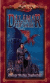 |
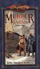 |
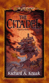 |
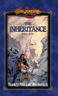 |
| 黑袍达拉玛(Dalamar the Dark) |
塔西斯的谋杀案(Murder in Tarsis) |
要塞(The Citadel) |
遗产(the Inheritance) |
黑袍达拉玛南希·瓦瑞安·博比瑞克(Nancy Varian Berberick)
随着长枪之战的进行，西瓦那斯提的精灵们认识到他们再也无法置身事外了，他们怎么做才能阻止龙人大军呢？或者还是该逃离家园？整个精灵社会都惶惶不安。最后，精灵之王星辰咏者罗拉克决定使用龙珠，而达拉玛也在这动荡的世界里决定了选择黑暗的道路，并且，前往大法师之塔接受试炼。
塔西斯的谋杀案约翰·马多克斯·罗伯茨(John Maddox Roberts)
一位将军率领军队来到大灾变后的塔西斯，计划镇压一次起义。但他却无意中发现这其实是一个拿成百上千士兵性命谋取私利的阴谋。不小心的他被谋杀了，他的部队则限期塔西斯城交出凶手，否则将攻城报复。找出凶手的任务交到了三个倒霉蛋手中，由佣兵、商人和前法师拼凑成的侦探小组必须在期限来临之前找出凶手，否则一样性命难保。本书其实和龙枪扯不上太大的关系，与其说是奇幻小说还不如说是侦探小说……
要塞理查德·A·纳克(Richard A. Knaak)
一名黑袍法师设计了飞行要塞，并运用魔力使它飞上了天空。这座满是魔法，并载满了带翼龙人的要塞在首领的指挥下开始了对全克莱恩的侵袭，妄图统治世界。于是，我们的英雄出场了，下面当然是如何打败boss拯救世界的故事……
遗产南希·瓦瑞安·博比瑞克(Nancy Varian Berberick)（未出版）
在大灾变的混乱时期，一位奎灵那斯提的精灵王族女子被一群人类的乌合之众抓住了，她只好祈求神明的救助。而这群人的首领在这乱世里也不相信任何人，只有自己的智慧。精灵女子和他在战乱中建立起一种奇特的信任。呵呵说到这里大家一定猜到了，不错，他们的孩子就是日后的长枪英雄——半精灵坦尼斯！
|